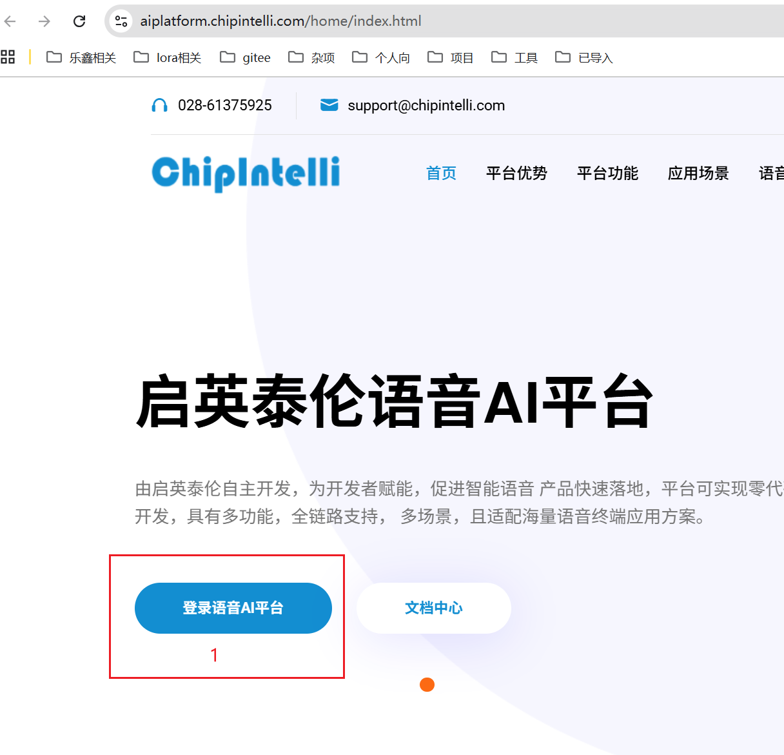
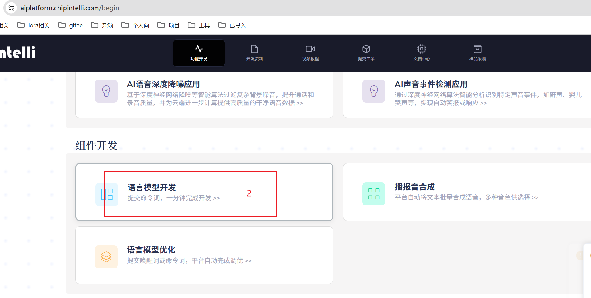
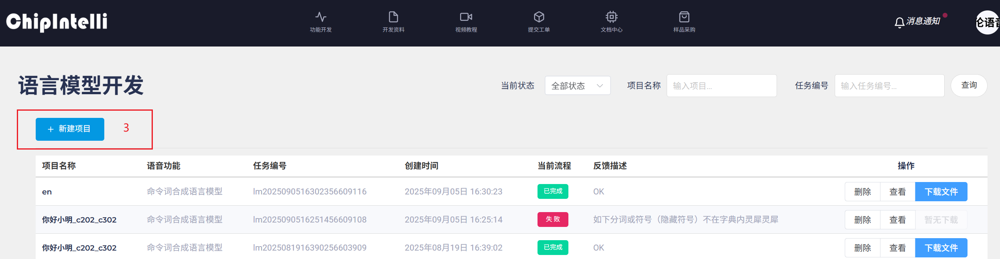
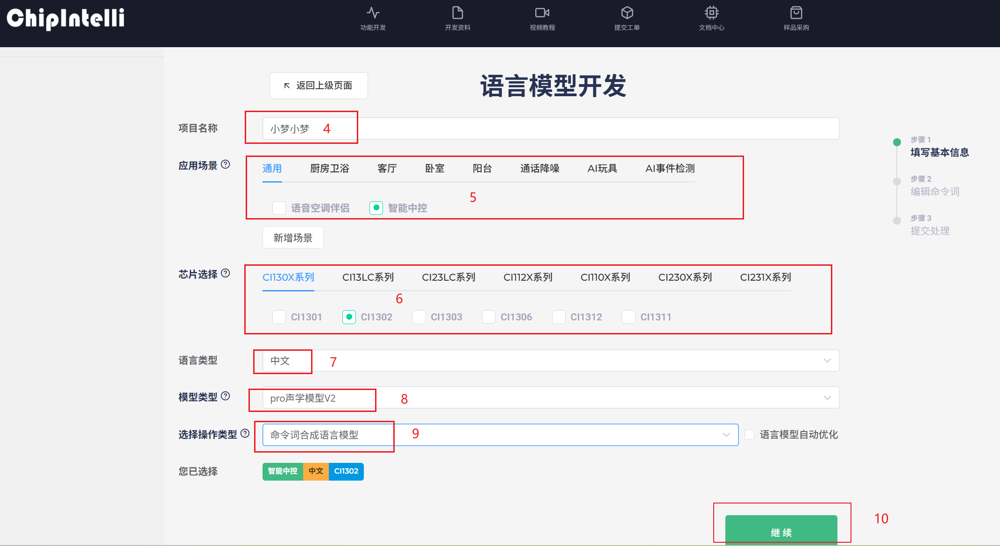
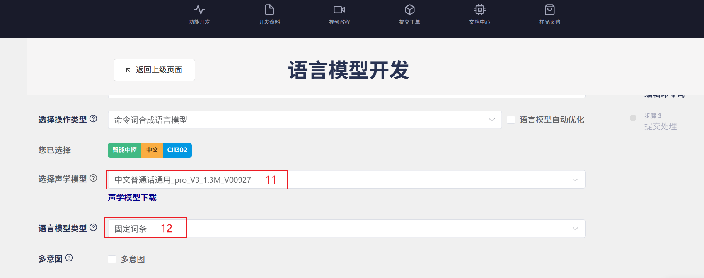
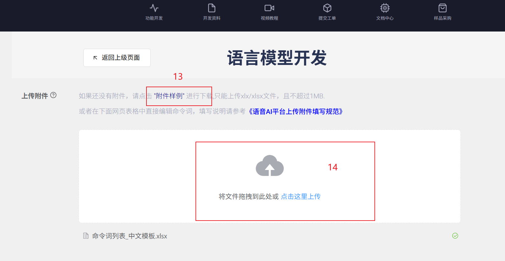
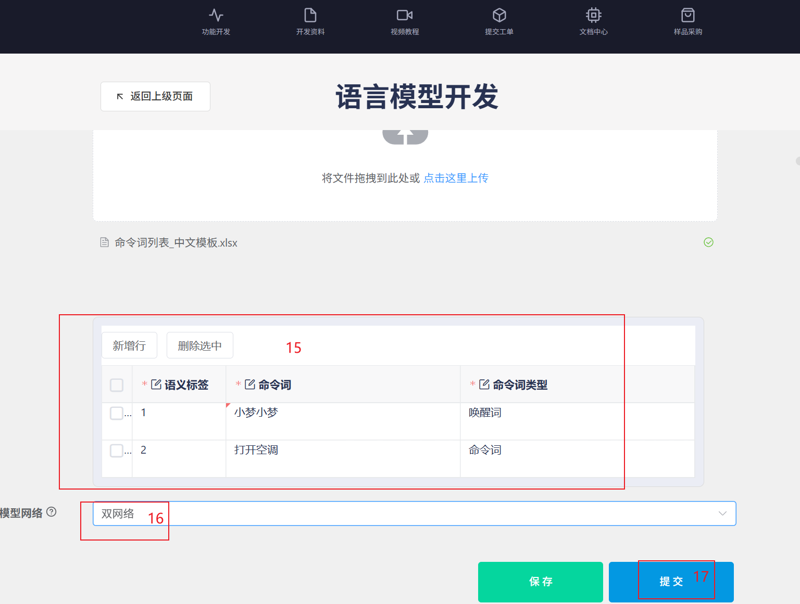
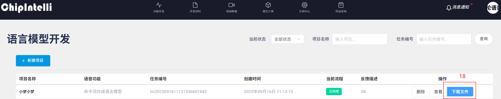

本文档详细说明了在启英泰伦官方平台上生成素材包的完整操作流程。

访问启英泰伦官方平台，使用您的账号登录系统。

登录后，选择相应的功能模块进入配置界面。

开始新建配置，设置基本参数。

进行详细的配置设置，包括语音模型、识别参数等关键配置。

继续完善配置参数，确保所有设置符合要求。

下载模板表格，填写您的唤醒词和命令词，然后导入到平台中。

对配置进行最终检查和修改，确认无误后提交生成请求。

生成完成后，下载包含以下文件的素材包：
完成素材包下载后，请按照主README文档中的"具体步骤"进行本地bin文件生成：
generate_bins.bat脚本